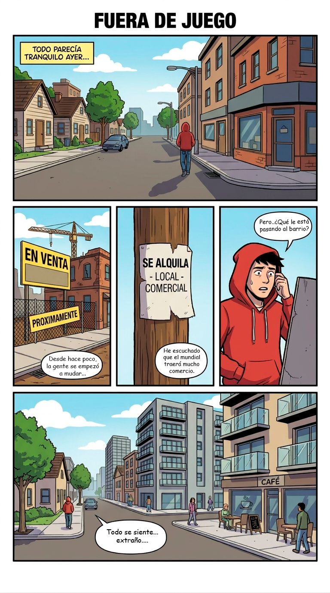
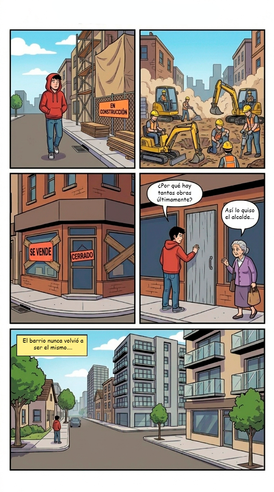
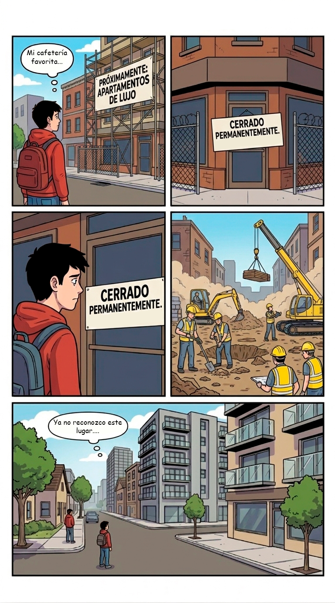
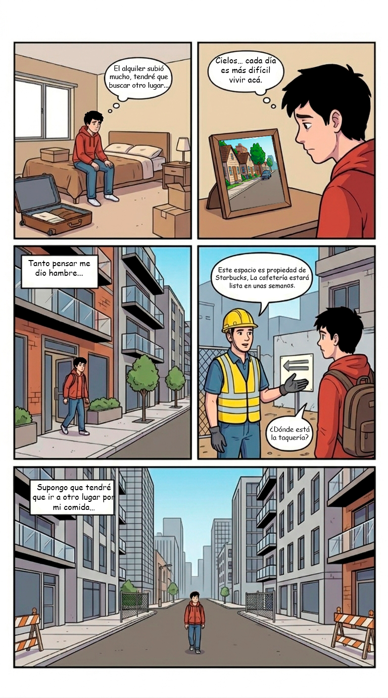
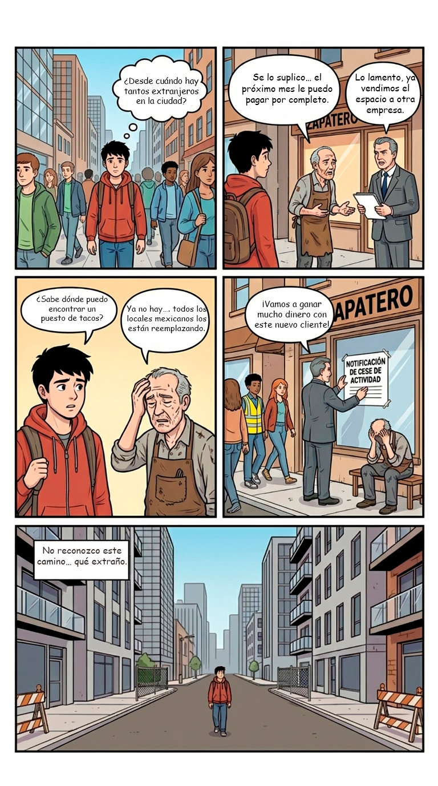
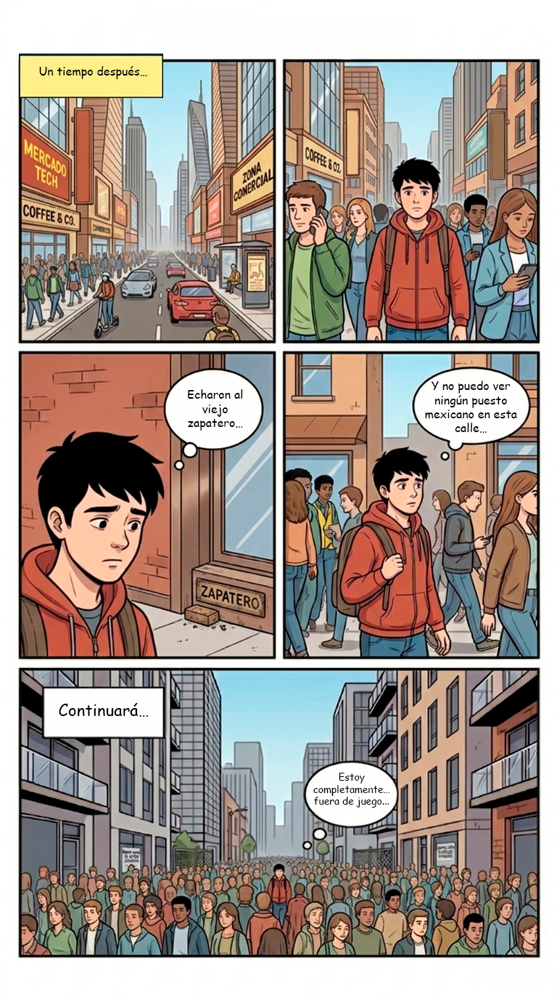

Periodismo Gráfico
El Cómic
Fuera de Juego en 6 páginas. Usa los botones, las flechas del teclado o desliza para pasar páginas.






Pág. 1 / 6
Usa los botones o las flechas del teclado para cambiar de página
📖
Periodismo gráfico
Cada viñeta está basada en datos reales: precios de alquiler, desalojos documentados y testimonios de activistas.
🔗
Experiencia transmedia
Los códigos QR en cada capítulo te llevan a mapas interactivos, audios y datos adicionales en este sitio.
🔒
Desbloquea el Cap. 4
El final solo existe si tú lo construyes. Comparte tu testimonio para acceder al capítulo 4.
¿Quieres ser parte?
Tu historia puede aparecer en la próxima edición del cómic.